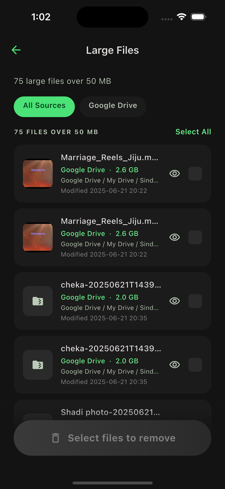

Move files without re-uploading.
Move files between your phone and cloud — or across clouds — without downloading and uploading again. Free up space instantly. Premium.
See what's taking space on your phone and cloud — clean it all in one place. Nothing leaves without your tap.
3-month free trial · No auto-delete · Files never leave your accounts
CirroGuide doesn't decide for you. It shows you what's taking space — and waits for your tap.
CirroGuide finds what's taking space — duplicates, old screenshots, large videos, blurry shots — and shows you. You decide what goes. Every time.
Sign in to your phone's photo library and any cloud you use — Google Drive, iCloud, Dropbox, OneDrive. We index file names, sizes, and types only.
Duplicates, large videos, blurry photos, old screenshots — grouped, previewable, and totaled. Nothing runs automatically.
You select. You confirm. Items go to your provider's trash, where you can restore them. You chose what to remove.
CirroGuide looks across your phone and every connected cloud at once.
The exact same file, saved in two places. Hundreds of groups, often gigabytes. You pick which copy stays.
The 75 biggest things on your phone or in your cloud, sorted by size. Most are years old.
Out-of-focus shots and accidental captures. We surface them — you decide.
Receipts, memes, code snippets you never went back to. Easy to clear, easy to keep.
Cloud drives collect empty folders over years. We list them in one tap.
Files you haven't opened in twelve months. Surfaced, not deleted. You stay in control.
Most cleanup apps look at your phone. Most cloud apps make you open a different tab. CirroGuide shows your phone storage and every cloud you use side by side — so you see the full picture, and clean it once.

A first scan typically surfaces tens of gigabytes of clutter — duplicates, videos you forgot, screenshots from 2019. You'll see numbers like these.
Used out of 205.8 GB across phone + cloud
Of clutter you can review and free in one place
CirroGuide doesn't just help you clean — it helps you manage your storage.
Move files between your phone and cloud — or across clouds — without downloading and uploading again. Free up space instantly. Premium.
Sort your files by year, month, or type. Preview the structure first, then apply in one tap. Premium.
No. We read file names, sizes, dates, and content hashes only — locally on your device. Your photos and documents never leave your phone or your cloud accounts for our servers.
We move the items you selected to your provider's trash — Google Drive trash, iCloud Recently Deleted, Dropbox deleted files. You confirm before anything moves. You can restore items from your provider's trash for about 30 days.
CirroGuide is free to install and includes a 3-month trial with full access to everything — Clean, Organize, and Move. After the trial, cleanup, organize, and move features require a Premium plan. No ads — ever.
Email us at support@cirroguide.com. A real person reads every message — usually replies within a day.
Install CirroGuide, connect your phone and clouds, see what you can clean — in five minutes.
3-month free trial · No auto-delete · No ads · Questions? support@cirroguide.com